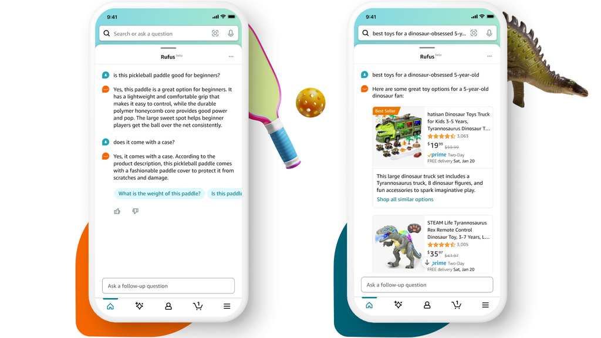
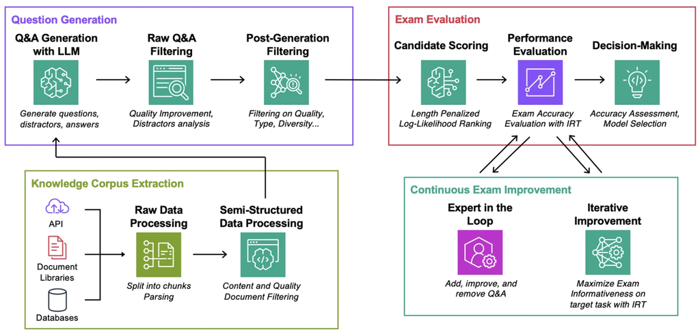
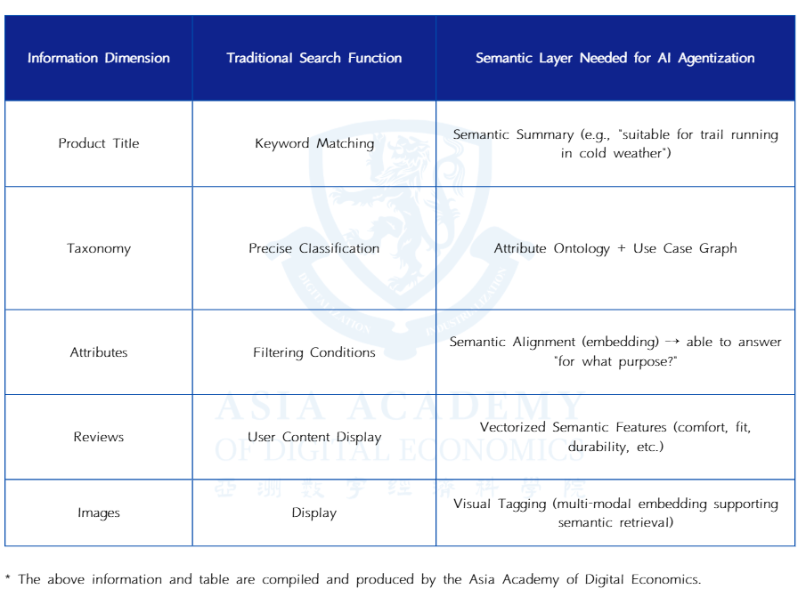
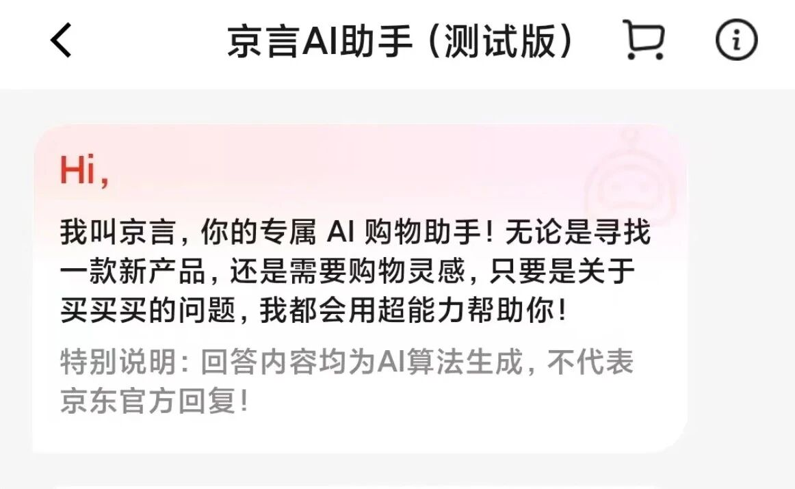
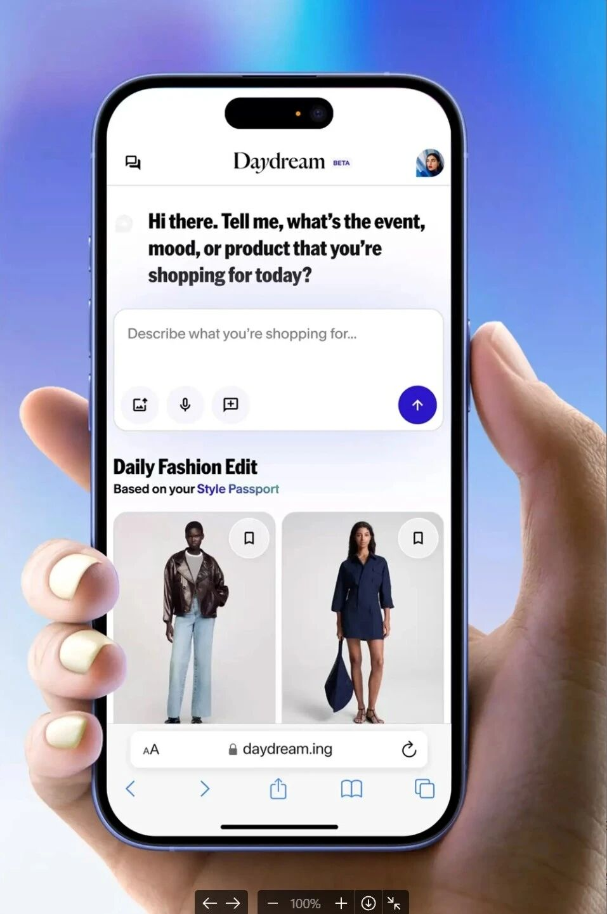
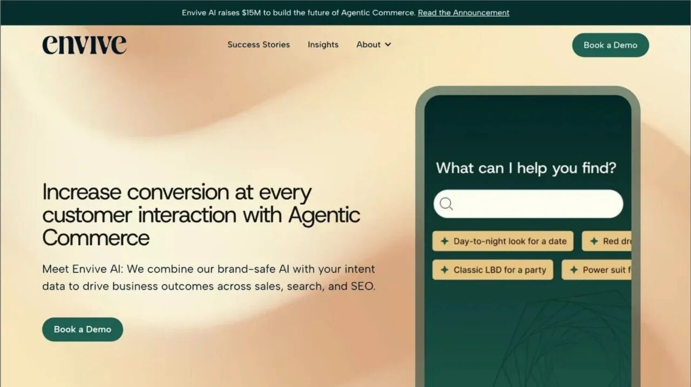
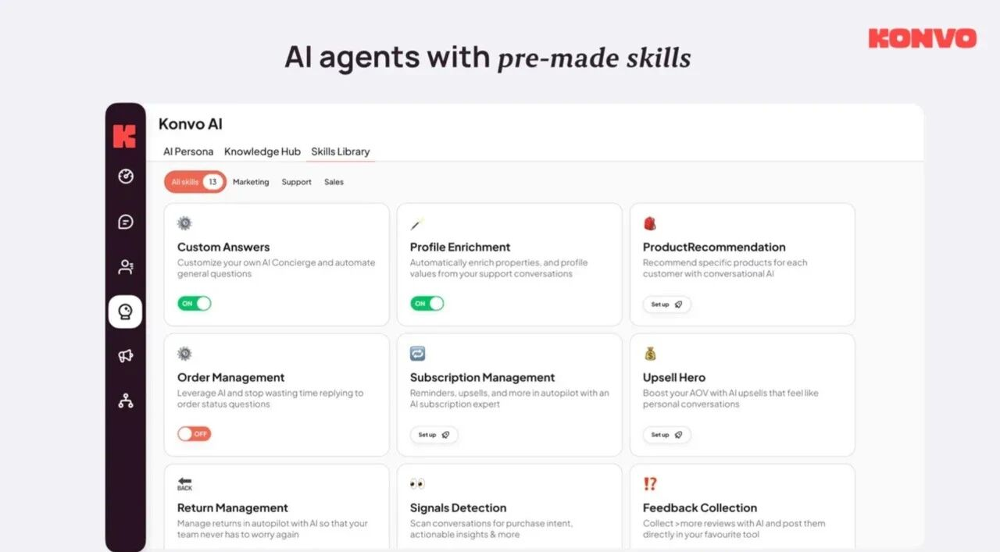
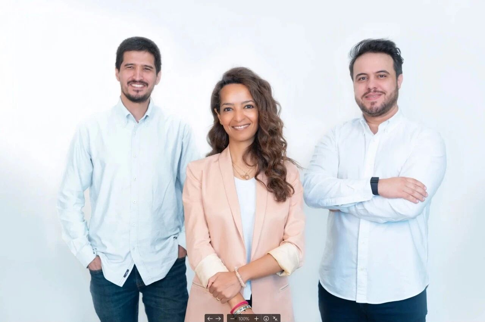
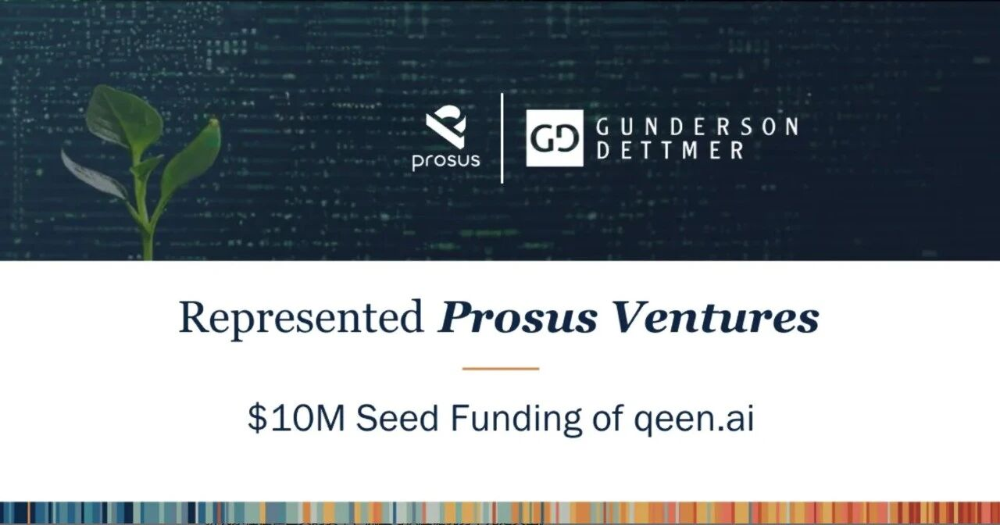

The New E-Commerce Revolution with AI Agents: Will Product Distribution Logic Be Rewritten Again?
Key Points
- General e-commerce platforms are embedding AI agents into shopping, but their biggest constraint remains the semantic restructuring of product data.
- Vertical players such as Daydream target needs that broad marketplaces struggle to serve, especially where style, occasion, and visual nuance matter.
- Merchant-facing agents are emerging as a major category, helping brands improve conversion through proactive sales, automation, and localized operations.
- The deeper shift is from keyword retrieval to semantic understanding: the winners may be those that best model user intent and product meaning.
1. Category One: General E-Commerce Giants Are All Entering the Space
Representative of Major Players/Tech Giants: Amazon
Amazon’s Rufus illustrates the first major path in agentic e-commerce: the general-platform incumbent using proprietary models, platform-scale product data, and layered retrieval systems to turn shopping from keyword search into a more conversational, intent-aware experience. Its significance lies less in the interface alone than in the broader effort to rebuild the semantic representation of products at platform scale.

Large e-commerce platforms have moved quickly to deploy generative AI shopping agents, with Amazon’s Rufus serving as a representative example. Positioned as a shopping assistant for queries such as “I want to buy...,” Rufus recommends and compares products by drawing on Amazon’s vast catalog together with reviews, Q&A content, and other internal shopping data.
Rufus is not simply a chatbot layered on top of search. According to Amazon’s own technical description, it is powered by an internally developed foundation model fine-tuned for shopping tasks and embedded in a multi-stage agent pipeline. That pipeline includes intent understanding, retrieval from Amazon’s internal product knowledge systems, and natural-language generation of the final response. In other words, the model does not work alone; it orchestrates multiple stages of understanding, retrieval, and presentation.

When a user enters a request such as “I need comfortable sneakers for marathon training under $100,” the system first parses the request into structured intent: product type, desired attributes, use case, and budget. It then performs multi-source retrieval, combining semantic vector search with structured filters such as price, brand, and availability. Candidate items are re-ranked using signals such as click-through and conversion history, semantic relevance, and alignment with the user’s context before the top results are passed to the language model for comparison and explanation.
This means the system is not merely generating products out of thin air, nor is it just repackaging keyword search. Some keyword-based indexing still matters for recall, but the real advance lies in semantic intent parsing and contextual re-ranking. Traditional search begins with user keywords and prioritizes lexical matching; Rufus begins with user intent and attempts to map that intent onto products through semantic matching and layered ranking.
Yet the real bottleneck lies beneath the interface. For an agent to understand needs and make reliable recommendations, product data itself must support semantic understanding and cross-dimensional reasoning. That requires a deeper reconstruction of product information architecture: richer attributes, cleaner labels, and representations that combine structured and unstructured content. Amazon has already been moving in this direction through product knowledge graphs and multimodal embedding systems.

Chinese platforms began exploring similar ideas even earlier. Alibaba launched AliMe as far back as 2018, and platforms such as Taobao, JD.com, Douyin, and Pinduoduo have since built their own AI shopping assistants. Products like Taobao’s AI search and JD.com’s conversational shopping tools can already interpret natural-language input, generate multimodal recommendations, and support a degree of interaction and reasoning. In terms of rollout speed and scale, Chinese platforms are among the earliest and most ambitious experimenters in bringing generative agents into large retail environments.

But the core challenge is the same. Even when the model can understand a user’s request, the underlying semantic structure of product data, tagging systems, and content generation workflows has often not been systematically rebuilt. As a result, the user-facing improvement is still limited in many cases, and these capabilities are frequently tucked into secondary entry points or reserved for scenarios with more specialized specification requirements.
2. Category Two: Vertical E-Commerce + Agents, Focused on Addressing Niche Needs That General E-Commerce Overlooks
A second path is emerging among vertical e-commerce startups that combine domain focus with agent-based interaction. These companies target needs that large general marketplaces often fail to serve well, not because the markets are too small, but because the relevant user needs are too nuanced to fit comfortably within broad, standardized product taxonomies.
Fashion is a particularly strong example. In theory, major platforms already offer enormous inventories and powerful recommendation systems. In practice, users shopping for style, mood, occasion, silhouette, or aesthetic expression often find the traditional “search, filter, browse” experience inefficient and unsatisfying. These are not merely inventory problems; they are semantic problems. The user may not know the exact keywords to use, yet may still have a vivid sense of the look, feeling, or context they want.
This is precisely the kind of problem that agents are well suited to address, but it is also the kind of problem that general marketplaces struggle to solve from within. The obstacle is not only interface design; it is data architecture. Broad platforms would have to rework their product representation systems in ways that are difficult, slow, and organizationally expensive. A vertical startup, by contrast, can build a cleaner and more focused data foundation from the start.
Daydream: A Fashion Product Shopping Platform Focused on "Natural Conversation + Image Prompts"
Daydream, founded by former Sephora CMO Julie Bornstein, is building around exactly this opportunity. The company focuses on fashion discovery through natural conversation and image-led prompts, aiming to make shopping feel more intuitive for users who think in terms of style, occasion, and visual references rather than precise product keywords.

Its interaction model is central to the thesis. Conversational recommendation, paired with image upload and natural-language search, lowers the threshold for expressing intent and better matches the habits of younger, more visually driven consumers. If shopping behavior shifts from “I know the keyword, so I search for it” to “I describe the scenario or style, and the system helps me find it,” a platform like Daydream could establish a meaningful early position.
On the supply side, Daydream is also trying to differentiate by curating a more selective catalog through partnerships with high-end, designer, and multi-brand retailers. This improves the value of discovery and reduces the noise that comes from undifferentiated mass-market inventory. For brands, this offers an attractive alternative to competing for visibility on giant marketplaces where exposure is expensive and differentiation is difficult. The tradeoff, however, is that this sharper positioning may also place a ceiling on the platform’s ultimate market size.
3. Category Three: Agents Serving E-Commerce Merchants
A third category focuses not on consumers directly, but on the merchants that sell online. These companies provide AI agents that help brands run storefronts, engage visitors, automate content, and improve conversion. In many cases, the opportunity is strongest where brands still control their own websites and customer relationships, especially in independent e-commerce ecosystems or underpenetrated regional markets.
Compared with consumer-facing shopping agents, merchant-facing agents often have a more immediate path to monetization because they can be sold on a clear operational value proposition: better conversion, lower support costs, stronger ad performance, and faster content production. Their forms vary, but the common theme is that the agent becomes an intelligent commercial front end for the brand.
Envive AI | A provider of intelligent brand website solutions centered on a self-learning agent system
Envive AI, based in Seattle, is turning brand-owned websites into storefronts staffed by an agent that can think, respond, and learn over time. Its customers are typically medium-sized and large brands with independent e-commerce sites that want visitors to do more than browse static pages. Instead, shoppers can chat with an intelligent assistant, ask questions, and receive tailored recommendations.

Embedded directly into the brand site, Envive’s system interprets natural-language queries, recommends products, generates product-related copy, and continuously learns in the background to improve conversion. The company’s proposition is not simply automation, but the creation of a self-improving digital sales layer for branded commerce.
Konvo AI | Empowering small and medium-sized brands with a proactive "digital sales assistant," reshaping the transaction logic of independent websites
Konvo AI, founded in Berlin, takes a more proactive approach. It serves large numbers of small and medium-sized independent European brands whose websites often lack the ability to actively retain or convert hesitant shoppers. Rather than waiting passively for a customer to ask for help, Konvo’s agent monitors behavior in real time and steps in when it detects uncertainty or drop-off risk.

If a visitor lingers too long or seems undecided, the agent can initiate the conversation on its own, suggesting similar products, surfacing inventory cues, or offering assistance with choice. In this sense, it acts less like customer service and more like a digital salesperson. Its core promise is that even a small brand can have an always-on AI sales representative with a consistent voice and tireless availability.
qeen.ai | An e-commerce operations automation platform focused on the Middle East and emerging markets
qeen.ai is focused on the Middle East and North Africa, where many of the underlying business models are already proven elsewhere but remain less fully developed locally. The company provides small and medium-sized sellers with a full AI agent stack for operational automation, including product description generation, ad copywriting, TikTok and Meta campaign optimization, and automated customer conversations.

Its significance lies less in inventing a wholly new category than in adapting mature e-commerce automation capabilities to a regional market with strong local demand and relatively open room for execution. In emerging markets, much of the innovation in merchant-facing agents may come from localization, cost structure, and market fit rather than from radically new technical primitives.

4. The Next Reconstruction of E-Commerce: From the Search Box to the Semantic Layer
E-commerce has always been one of the industries closest to money. It is crowded, mature, and dominated by incumbents with enormous advantages in capital, traffic, and supply chains. For years, that has made meaningful entry extraordinarily difficult. Yet the rise of agents may be opening a genuine crack in that structure.
The old architecture of e-commerce was built around keyword retrieval. The system’s job was to help users find what they already knew enough to name, and one of the great moats of the incumbents was the scale of the data that fed search and recommendation engines. Agentic systems point toward a different logic. Their promise lies in reconstructing the semantic structure of products so that the system can understand the problem a user is trying to solve, not just the words the user happened to type.
That shift demands a new data architecture. Products must be re-described, re-labeled, and represented in forms that support semantic reasoning. Once that happens, some of the data foundations that once gave traditional e-commerce its edge can become burdens rather than assets. What ultimately helps a user buy a better product is not simply a smarter search box, but a new semantic intermediary between human intention and commercial inventory.
If keyword search is like sending a telegram to a merchant, then conversational semantic commerce is more like equipping an enormous online marketplace with an expert sales associate who understands every product, can hold a multi-turn conversation, learns your preferences, and recommends what actually fits. Amazon’s Rufus and similar systems are early attempts to merge search, recommendation, and question answering into a single intent-driven interface.
Startups such as Daydream are exploring a parallel path outside the major platforms, using more flexible model stacks and finer-grained data expression to build new interfaces for semantic distribution. What unites these efforts is the move from computing over the surface description of products to computing over their meaning. That is the real qualitative break between agentic commerce and traditional search.
The picture is more complex on the business-facing side. In many emerging markets, a large share of agent projects still amounts to localizing content generation or customer-service automation models that are already mature elsewhere. The innovation is often strongest in adaptation and economics. In Europe and the United States, by contrast, where independent brand sites still matter, companies such as Envive AI and Konvo AI have more room to experiment with learning, sales-oriented agents that function as intelligent branded storefronts.
China presents a dual reality. On one hand, the high concentration and relative closure of platform ecosystems can limit interface-level opportunities for independent B2B startups. On the other, the AI infrastructure of giants such as Alibaba, JD.com, and Douyin is advancing rapidly, which could make the platforms themselves the earliest places where full-scale agentic commerce takes hold.
Overall, this wave is not just another tool upgrade. It is a deeper rewrite of e-commerce information structure and semantic expression. Whether the winners are incumbents reinventing themselves or startups exploiting newly opened gaps, the center of competition is shifting from control of traffic to control of meaning. As distribution logic moves from keywords to intent and from retrieval to agency, the intelligent commerce interface will no longer be about people searching for goods; it will be about systems understanding people first, and then reorganizing the world’s goods around that understanding.
E-commerce has always been the industry "closest to money" — the market is saturated, giants stand on every corner, and almost any gap is quickly filled. For a long time, new players have often found no way to break through under the overwhelming advantages of capital, traffic, and supply chains held by the giants.
What makes the current moment different is that agents challenge the deepest assumptions of the previous era. If the old game was about who controlled traffic and optimized keyword-based discovery, the next game may be about who can best define the semantic layer that connects human intent with product supply. That is why the most important battlefield in e-commerce may no longer be the search box, but the structure of meaning beneath it.
- [1] Amazon Science. The technology behind Amazon‘s GenAI-powered shopping assistant, Rufus. Amazon.science. amazon.science/blog/technology-behind-amazons-genai-powered-shopping-assistant-rufus.
- [2] Amazon Science. Automated evaluation of RAG pipelines with exam generation. Amazon.science. amazon.science/blog/automated-evaluation-of-rag-pipelines-with-exam-generation.
- [3] Index Ventures. Bringing AI to the fashion industry: Our investment in Daydream. IndexVentures.com. indexventures.com/perspectives/bringing-ai-to-the-fashion-industry-our-investment-in-daydream.
- [4] Business of Fashion. Julie Bornstein‘s New Startup Raises $50 Million. BusinessOfFashion.com. businessoffashion.com/articles/technology/julie-bornstein-new-startup-raises-50-million.
- [5] Vogue. Is Daydream‘s AI Platform the Answer to Fashion’s Discovery Problem?. Vogue.com. vogue.com/article/is-daydreams-ai-platform-the-answer-to-fashions-discovery-problem.
- [6] Yahoo Finance. Envive AI raises $15M Series A to transform patient intake with ambient AI. Yahoo Finance. finance.yahoo.com/news/envive-ai-raises-15m-series-120000725.html.
- [7] TechFundingNews. Konvo AI raises $3.5M for proactive e-commerce AI agents. TechFundingNews.com. techfundingnews.com/konvo-ai-3-5m-proactive-ecommerce-ai-agents.
- [8] Entrepreneur Middle East. We Got Funded: Dubai-based Qeen.ai closes one of the largest seed rounds in regional AI history. Entrepreneur.com/en-ae. entrepreneur.com/en-ae/technology/we-got-funded-dubai-based-qeenai-closes-one-of-the/486691.
- [9] Prosus. Prosus Ventures leads Qeen.ai‘s $10 million seed round. Prosus.com. prosus.com/news-insights/group-updates/2025/prosus-ventures-leads-qeen-ais-dollar-10-million-seed-round.